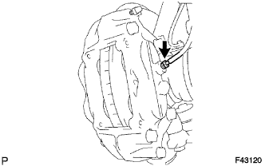
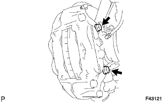
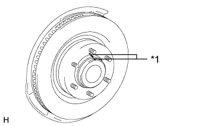
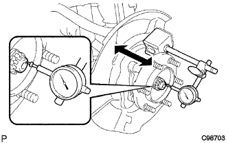
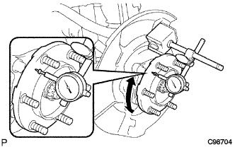

FRONT AXLE HUB > ON-VEHICLE INSPECTION |
| 1. REMOVE FRONT WHEEL |
| 2. REMOVE FRONT DISC BRAKE CYLINDER ASSEMBLY LH |
|  |
Using a union nut wrench, disconnect the brake tube from the disc brake cylinder assembly.
|  |
Remove the 2 bolts and disc brake cylinder assembly.
| 3. REMOVE FRONT DISC |
|  |
Place matchmarks on the disc and axle hub if planning to reuse the disc.
| *1 | Matchmark |
Remove the front disc.
| 4. REMOVE FRONT AXLE HUB GREASE CAP |
Using a screwdriver and hammer, remove the front axle hub grease cap.
| 5. INSPECT FRONT AXLE HUB BEARING LOOSENESS |
|  |
Using a dial indicator, measure the looseness near the center of the axle hub.
| 6. INSPECT FRONT AXLE HUB RUNOUT |
|  |
Using a dial indicator, measure the runout on the surface of the axle hub outside the hub bolts.
| 7. INSTALL FRONT AXLE HUB GREASE CAP |
Install the axle hub grease cap.
| 8. INSTALL FRONT DISC |
Align the matchmarks and install the front disc.
| 9. INSTALL DISC BRAKE CYLINDER ASSEMBLY LH |
Install the disc brake cylinder assembly with the 2 bolts.
Using a union nut wrench, connect the brake tube to the disc brake cylinder assembly.
| 10. INSTALL FRONT WHEEL |